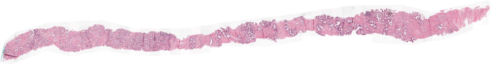
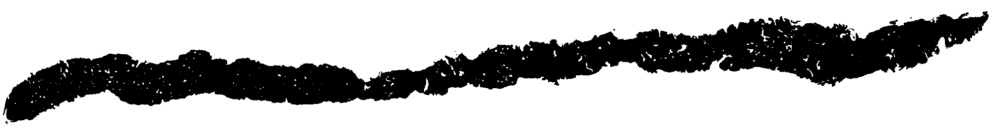
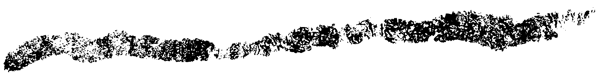
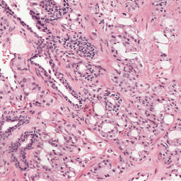

Reading slide images with SlideReader
Reading large medical images is easy with histoprep.SlideReader. When slide reader loads an image, a thumbnail of the slide and tissue mask are automatically generated for inspection.
from histoprep import SlideReader
# Read slide image.
reader = SlideReader(slide_path)
# Access thumbnail and tissue mask as attributes.
display(reader.thumbnail)
display(reader.tissue_mask)

It's possible to adjust the threshold for tissue detection or the size of the thumbnail.
# Thumbnail can be adjusted when reading the slide...
reader = SlideReader(slide_path, preferred_dimension=2048)
print(reader.thumbnail.size)
# ... or after the slide has been read!
reader.get_thumbnail(preferred_dimension=10_000)
print(reader.thumbnail.size)
(2016, 272)
(8064, 1088)
# Same goes for tissue detection.
reader = SlideReader(slide_path, threshold_multiplier=1.0)
display(reader.tissue_mask)
# Change to a too low threshold.
reader.detect_tissue(threshold=180)
display(reader.tissue_mask)
# Default settings work fine 99% of the time.
reader.detect_tissue()
display(reader.tissue_mask)



SlideReader object has a __repr__ which shows some information about the slide.
print(reader)
biopsy_slide:
Dimensions: (4352, 32256)
Downsamples: [1, 2, 4]
Channel order: XYWH
Dimension order: HW
Tissue threshold: 221
Backend: OPENSLIDE
Often large slide images are divided into different levels with different downsamples.
print(reader.level_dimensions)
print(reader.level_downsamples)
{0: (4352, 32256), 1: (1088, 8064), 2: (272, 2016)}
{0: (1.0, 1.0), 1: (4.0, 4.0), 2: (16.0, 16.0)}
You can read individual regions of the slide at different downsamples.
# Read region from full resolution....
display(reader.read_region(xywh=(2048, 2048, 256, 256)))
# ... and from downsample 4 (level=1).
display(reader.read_region(xywh=(2048, 2048, 256, 256), level=1))


It's also easy to divide the slide into tiles.
coords = reader.get_tile_coordinates(width=256, overlap=0.1, max_background=0.5)
print("Cut the slide into {} tiles.".format(len(coords)))
# After cutting, an annotated thumbnail can be visualised.
display(reader.annotated_thumbnail_tiles)
Cut the slide into 741 tiles.